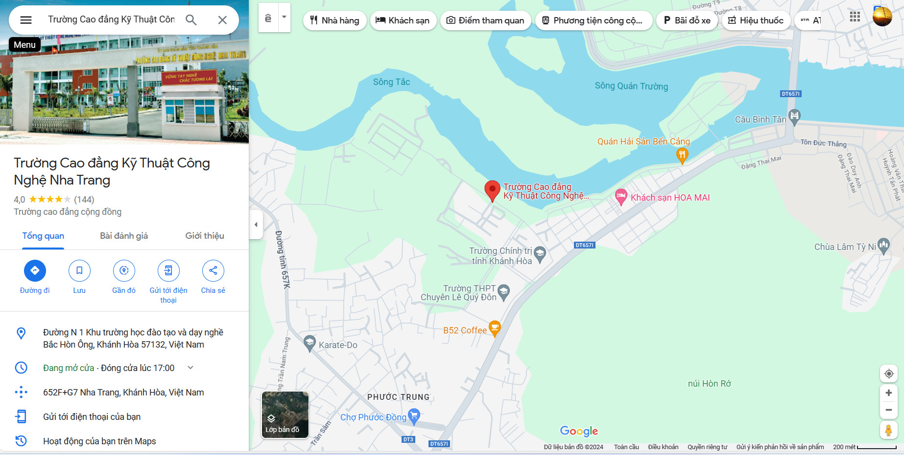

quay lại.
Mục tiêu và Sứ mạng của Trường CĐ KTCN Nha Trang:
Thứ hai - 08/11/2021 14:44
 Trường CĐ KTCN Nha Trang là một ngôi trường có bề dày truyền thống về giáo dục nghề nghiệp, đã được nhà nước trao tặng nhiều danh hiệu cao quí như: Huân chương lao động hạng III, Huân chương lao động hạng II, Huân chương lao động hạng I.
Trường CĐ KTCN Nha Trang là một ngôi trường có bề dày truyền thống về giáo dục nghề nghiệp, đã được nhà nước trao tặng nhiều danh hiệu cao quí như: Huân chương lao động hạng III, Huân chương lao động hạng II, Huân chương lao động hạng I.
.
MỤC TIÊU
Đào tạo người lao động có kiến thức, kỹ năng nghề nghiệp theo các bậc đào tạo ở các cấp trình độ: cao đẳng, trung cấp và sơ cấp; có đạo đức, lương tâm nghề nghiệp, ý thức kỷ luật, tác phong công nghiệp, có sức khỏe phù hợp với nghề nghiệp nhằm tạo điều kiện cho người lao động có khả năng tìm việc làm, tự tạo việc làm, tham gia lao động trong và ngoài nước hoặc tiếp tục học tập nâng cao trình độ, đáp ứng yêu cầu phát triển kinh tế - xã hội, củng cố an ninh quốc phòng.
SỨ MẠNG
Xây dựng Trường Cao đẳng Kỹ thuật Công nghệ Nha Trang là Trường chất lượng cao để đào tạo nguồn nhân lực kỹ thuật trực tiếp trong sản xuất, dịch vụ có kiến thức, kỹ năng và trách nhiệm nghề nghiệp cao, nhằm tăng cường năng lực cạnh tranh của người lao động và phát triển nguồn nhân lực của tỉnh Khánh Hòa và khu vực Nam Trung Bộ - Tây Nguyên, góp phần thực hiện thành công mục tiêu công nghiệp hóa, hiện đại hóa đất nước.
Thiết lập các dịch vụ dạy và học đa dạng, linh hoạt để hỗ trợ và khuyến khích học tập, đáp ứng nhu cầu học tập suốt đời của mọi thành viên trong cộng đồng.
Đối tượng phục vụ: Người dân có nhu cầu học tập nâng cao trình độ theo quy định.
Sử dụng hiệu quả nguồn ngân sách nhà nước cấp, huy động tối đa các nguồn lực khác để đảm bảo thực hiện vai trò chủ đạo của cơ sở giáo dục công lập trong việc đào tạo nguồn nhân lực và phục vụ nhu cầu học tập của người học.
Cung cấp nguồn nhân lực đa dạng có trình độ chuyên môn cao và các kỹ năng nghề tốt ứng dụng vào thực tiễn cuộc sống.
Tác giả bài viết: Phòng BĐCL-KT
BẢN ĐỒ VỊ TRÍ TRƯỜNG CĐ KỸ THUẬT CÔNG NGHỆ NHA TRAN

Ấn vào hình hoặc tại đây